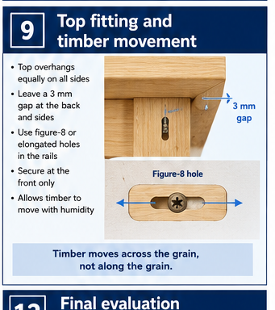

Alignment
Hardware sits in the intended position and does not pull the top or storage component out of line.
Industrial Technology – Timber
Weeks 11–12: Top fitting, timber movement and final hardware checks

Your work
Your entries save automatically in this browser. Use Print / Save PDF before leaving the page.
Two-week roadmap
Align and secure the thick top while allowing the approved movement and maintaining a stable table. Apply the procedures and checks to the actual bedside-table project before irreversible work continues.
Theory 1

The thick solid-timber top should be fitted so it sits flat, centred and slightly overhangs the slim tapered-leg frame as shown on the approved drawing. Measure the overhang from one consistent reference face, then compare both sides and ends before fixing anything. Prepare the top edges carefully so they are straight, smooth and free from damage, while keeping the corners and profile consistent with the design.
Solid timber expands and contracts mainly across the grain as moisture conditions change. The fixing method must therefore hold the top securely while still allowing this natural movement. A rigid fixing across the grain can restrict movement and may cause the top to split, cup or distort, or place stress on the frame below.
Before final fitting, check that the top makes even contact with the supporting frame, does not rock and remains aligned with the tapered legs and apron. Recheck centring and overhang after tightening the fixings.
Place the top on the completed frame and check the approved overhang or alignment from the front, back and both sides. Use the same reference method on each side rather than estimating by eye.
The frame bearing surfaces and underside of the top should meet as planned. If one corner is high, diagnose whether the cause is the top, frame, debris, proud joint or uneven hardware before tightening anything.

Theory 2
Solid timber changes moisture content as surrounding conditions change. The main dimensional change occurs across the grain; movement along the grain is much smaller.
Read the grain direction. On a solid top, the long fibres usually run along the board. Seasonal expansion and contraction therefore occur mainly across its width. The frame below may run in another direction, so a rigid fixing across the grain can prevent natural movement.
Restraint creates stress. When the top tries to move but every fixing locks it in place, the timber may split, cup, distort the frame or pull fixings loose. The approved fixing method provides enough security for use while allowing the specified movement.
Movement allowance is not looseness. The top must not rattle or slide in normal use. The fixing arrangement controls where the top is held and where movement is permitted. Follow the supplied plan and teacher direction rather than inventing a slot, fastener or gap.
Theory 3
Grain direction determines how a solid timber top responds to seasonal moisture changes. Timber moves most across the grain as it absorbs or releases moisture, while movement along the grain is much smaller. If the top is restrained rigidly across its width, this natural movement can cause splitting, cupping, distortion or stress in the tapered-leg frame.
The approved plan’s movement allowance must therefore be followed exactly rather than replaced with a tighter fixing method. Before final tightening, confirm that the grain direction is understood, the top is correctly positioned, the frame contact points are even and nothing is preventing movement. Tighten progressively while checking that the top remains stable and the frame does not twist.
If the top rocks, identify high contact points, loose joints or an uneven frame before altering the top. If it cups or sits unevenly, check moisture-related distortion, incorrect restraint and uneven support. Do not force the top flat with excessive fixing pressure.
Use only the fixing arrangement shown on the plan or directed by the teacher.
Check centre, overhang, grain direction, underside clearance and frame contact.
Transfer fixing positions without allowing the top to creep.
Use the correct tool, depth control and work holding.
Stop when the fixing holds the top and the approved movement remains available.
Confirm alignment, stability and that no fixing is proud or damaging the timber.
Theory 4
Complete a final inspection of only the hardware shown on the approved plan. Check that each item is correctly positioned, aligned and sitting neatly against the timber. Fixings should be secure, with no looseness, movement or gaps around the fitting.
Where the hardware is designed to move, operate it several times and confirm that the action is smooth, controlled and free from binding. If an adjustment is required, mark the correct position, use a pilot hole where specified, and control the screwdriver or drill so the bit stays centred and does not damage the screw head or surrounding surface. Check that no metal sits proud of the timber and that there are no sharp edges or projections that could catch clothing or injure the user.
Correcting a loose or misaligned fitting does not mean tightening it as hard as possible. Over-tightening can strip the hole, crush timber fibres or distort the hardware. On the completed slim tapered-leg bedside table, careful hardware checks support safe use and a clean, professional finish.
Hardware sits in the intended position and does not pull the top or storage component out of line.
Fixings are firm, correctly seated and not stripped, loose or over-driven.
No proud metal, burr or sharp edge can catch a hand, cloth or object.
Where movement is required, the component travels smoothly without excessive play or binding.
Theory 5

An uneven top is a symptom. The cause may be in the top, the frame, the fitting surfaces, the hardware or the bench used for checking. Diagnosis starts with a known flat reference and a systematic inspection.
Check the frame first. Confirm the table stands without rocking and that the upper rails are level with one another. Look for proud shoulders, dried adhesive, twist or a rail that was clamped out of plane.
Check the top separately. Use raking light and a straightedge as directed to identify cup, twist or a local high point. Do not assume a fixing will flatten a distorted top safely. A solid top may require teacher-directed correction or a decision about whether the component remains suitable.
Check the interface. Remove dust, chips and loose hardware. Place the top in position without tightening and observe where it contacts. Mark the actual high point, correct only the approved cause and retest before drilling or changing a joint.
One corner lifts or the top rocks.
Frame twist, debris, proud joint, distorted top or uneven fixing.
Isolate the cause on a flat reference and use the least invasive approved correction.
Theory 6
Tolerance is the acceptable amount of variation from the intended result. It is not permission to work carelessly; it recognises that components must fit and function within realistic limits.
Judge the effect, not only the number. A small difference may be harmless in a hidden, non-critical location but serious where it creates rocking, an uneven reveal, a proud edge or cross-grain stress. Use the approved drawing, teacher guidance and functional checks to decide whether correction is required.
Complete a pre-finish hold point. The table should stand steadily, the top should sit and align correctly, joints should remain closed, hardware should be safe, and any approved storage feature should operate reliably. Finishing must not begin while a structural or fitting fault is still unresolved.
No rocking, loose part, sharp fixing or unsafe movement.
Top, joints and approved storage work as intended.
Overhangs, joint lines, tapers and gaps read as deliberate and consistent.
Guided practice
Each incorrect option explains the misunderstanding. Use the hint, return to the theory and keep trying until the question is mastered.
Apply your learning
Write a genuine first attempt, check the live guidance, compare with the model and improve your explanation before self-assessing.
Finish the two-week block
Your answers save in this browser as you work, but browser storage is not the official submission. Save the completed page as a PDF before closing it.
No marks, answers or personal information are sent from this webpage.